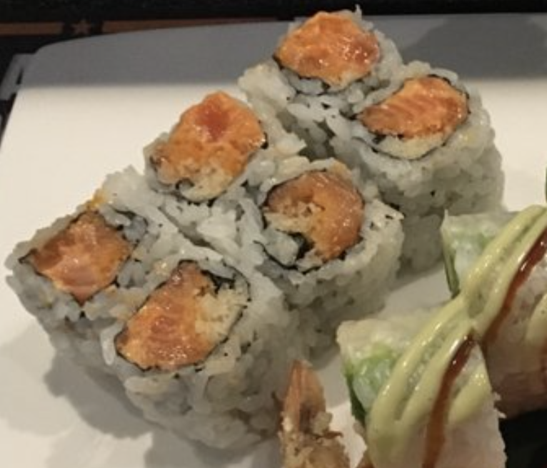
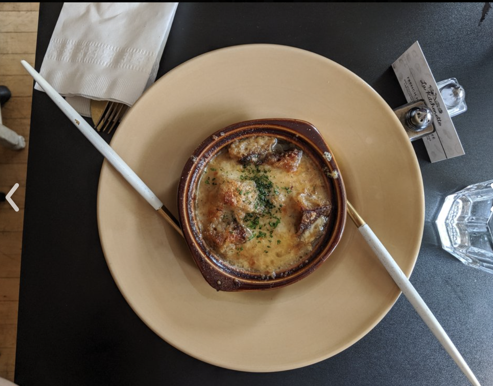
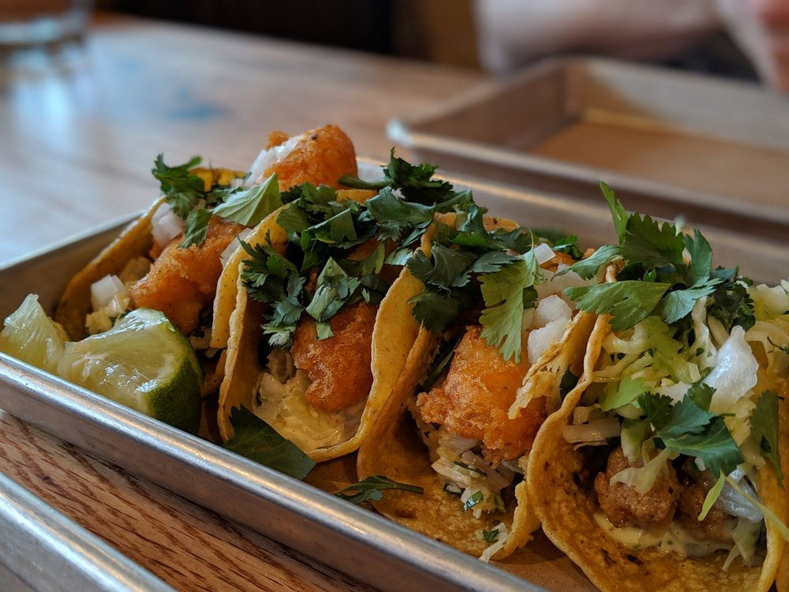
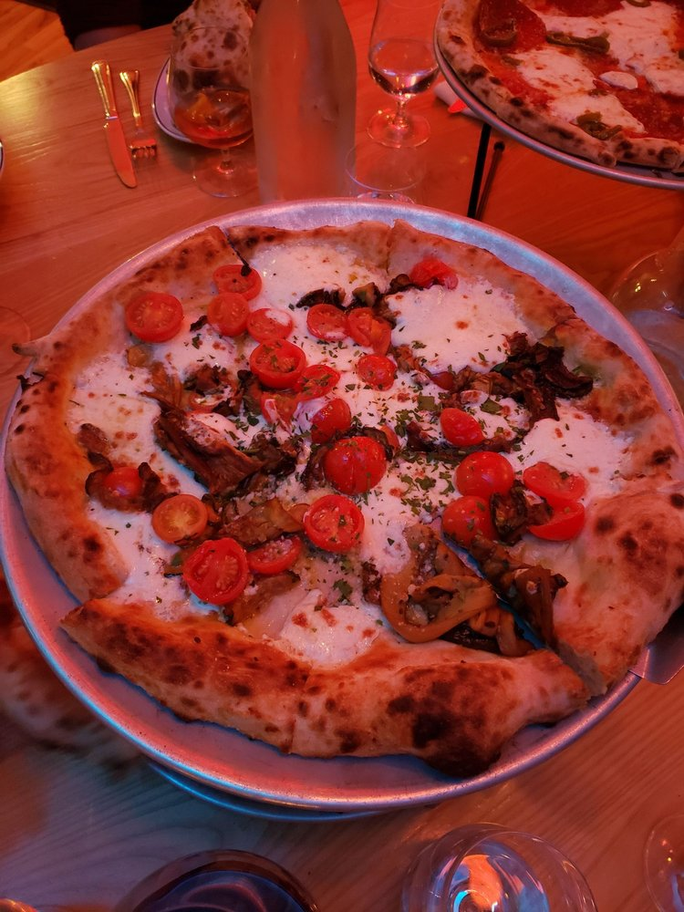
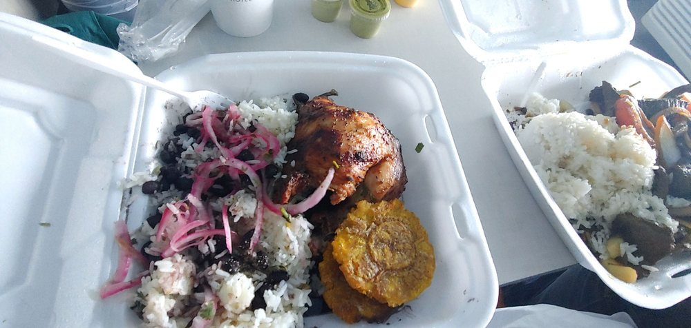
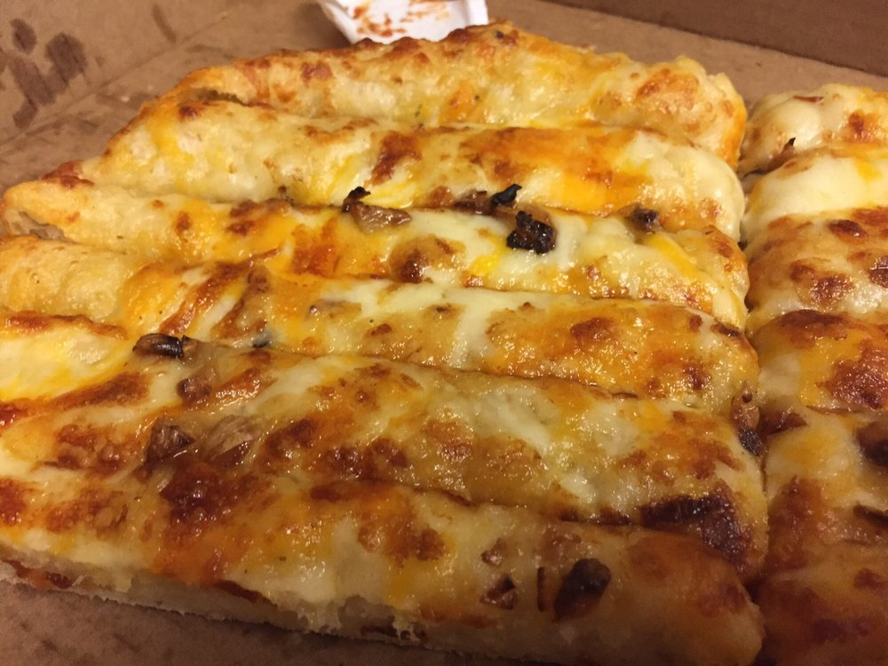

My Favorite Restaurants in Madison
In this section I will list my favorite restaurants in Madison and my favorite meal to get there
The Guide to Wisconsin Dining
- Yume-Spicy Tuna Roll
- La Kitchenette-French Onion Soup
- Bartaco-Fried Fish Taco
- Bar Corallini-Literally Any Pizza!
- Estacion Inka-Pollo Tropical
- Toppers-Toopers Stix w/ Garlic Butter





